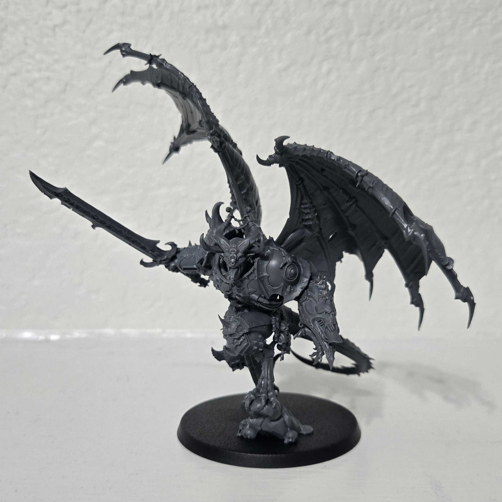
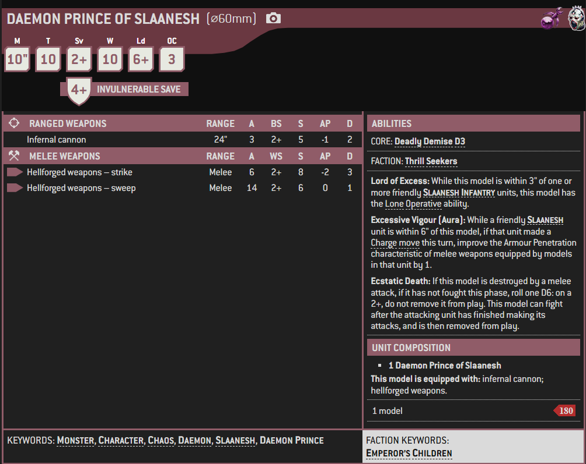

1 / 3

Miniature
2 / 3

Box Art
3 / 3

Artwork
The Daemon Princes of Slaanesh are also known as the "Favoured of the Senses," "The Chosen Children," and the "Blessed of the Flesh."
The Dark Prince touches many mortals in horrifying and cruel ways, warping and twisting them into mindless, unnatural forms. All of the Ruinous Powers are capricious by nature and are as likely as not to lavish mutations upon their followers, but Slaanesh's urges for indulgence make its caress especially risky. A mortal could achieve greatness worthy of notice, only to be ruined and become a mindless Chaos Spawn because the Dark Prince was in an especially wistful mood.
Those that do receive the greatest gift of all, though, realise their goal of immortality and are reborn as a Daemon Prince. It is the nature of Slaanesh, however, that even this great accomplishment is more of a beginning than an end point.
The newly transformed Daemon Prince must continue to push the edges of excess, must do more, must be more. If they were rewarded for creating an elixir so sweet to the taste that its mere scent causes people to ingest ceaselessly until they drown in it willingly, they must find a way to entice entire worlds to choose to taint their supplies of drinking water with the deadly concoction. This accomplished, they must go further with their creation, perhaps altering it to leave each victim with a yearning smile on their face. Service is unending and eternal. Failure is as well, for Chaos Spawndom or worse is always a possible punishment for disappointing Slaanesh, even for a mighty Daemon Prince.
